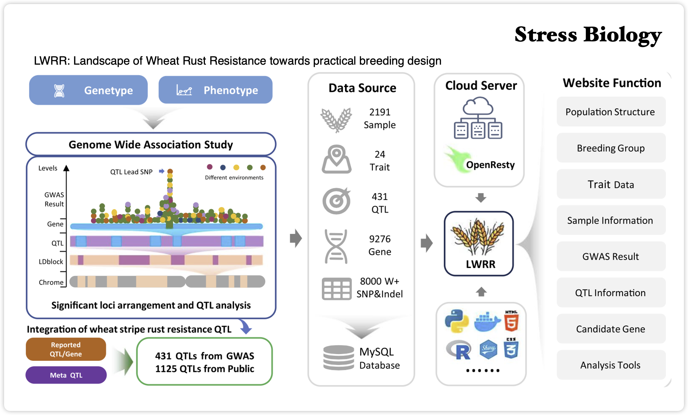

Crop Disease Resistance
Discovery and interpretation of resistance loci, superior alleles, and candidate genes for wheat yellow rust and related disease systems.
cropcoder
Ph.D. in Genetics, Chinese Academy of Sciences
I work at the interface of bioinformatics, crop disease biology, and wheat genetics, translating population genomics, resistance loci, and multi-omics evidence into practical resources for crop disease resistance breeding.
Research Focus
Discovery and interpretation of resistance loci, superior alleles, and candidate genes for wheat yellow rust and related disease systems.
Knowledge resources and analysis workflows that view resistance genes, QTL evidence, and breeding information easier to query.
Scientific visualization and reproducible analysis workflows for biomedical and agricultural data interpretation.
Selected Publications

Jiwen Zhao, Haitao Dong, Jinyu Han, Jingrui Ou, Tiantian Chen, Yuze Wang, Shengjie Liu, Rui Yu, Zhensheng Kang, Dejun Han, Qingdong Zeng, Xiaojie Wang, Shengwei Ma and Jianhui Wu.
Visit LWRRH Wang, X Li, K Zhai, J Rhodes, T Sang, J Zhao, Y Gao, S Ma, B Song, et al.
J Wu, S Ma, J Niu, W Sun, H Dong, S Zheng, J Zhao, S Liu, R Yu, Y Li, et al.
T Chen, YX Liu, T Chen, M Yang, S Fan, M Shi, B Wei, H Lv, W Cao, et al.
W Sun, H Dong, S Liu, S Ma, Q Zeng, J Li, K Ke, W Yue, W Zhang, X Fang, et al.
Q Wu, L Liu, D Zhang, C Li, R Nie, J Duan, J Wan, J Zhao, J Cao, D Liu, et al.
R Yu, Y Liu, M Yuan, P Jiang, J Zhao, C Zhang, X Xu, Q Wang, Y Wang, et al.
Tools and Resources
Contact
For collaboration on crop disease resistance, wheat genomics, scientific visualization, or bioinformatics platform development, please get in touch.